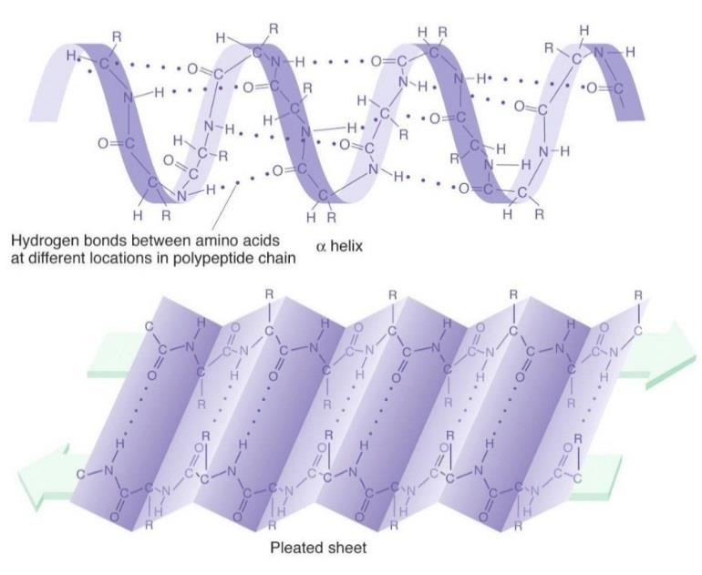
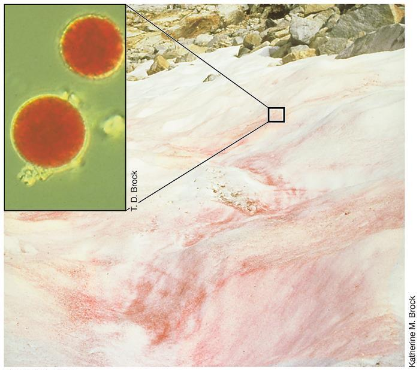
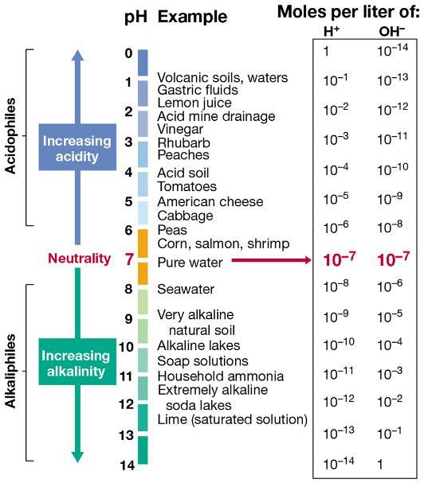
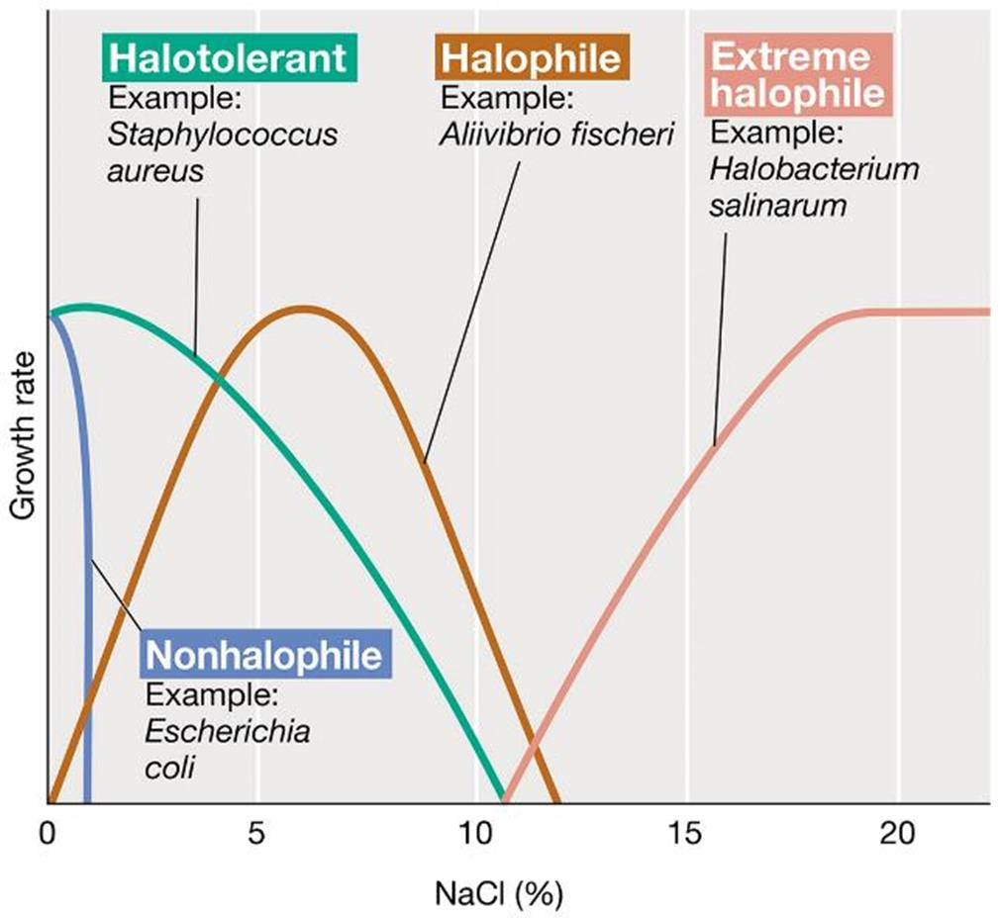
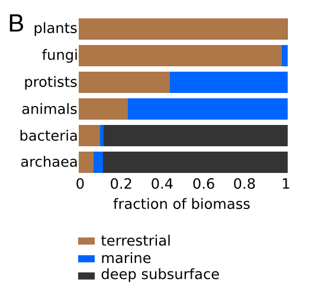

Extremophiles
Created Saturday 26 March 2022
@MISC @YEAR3 @MICROBIOLOGY
@extremophiles
Extremes of temperature
@Psychrophiles @Psychrotolerant @Mesophiles @Thermophiles @Hypertherophiles
| Phile | Optimum temperature | Lives in | Notes |
|---|---|---|---|
| Psychrophiles | 4 | The Arctic | |
| Psychrotolerant | 25 | Oceans and freezers | |
| Mesophiles | 39 | Human body | |
| Thermophiles | 60 | Everywhere | |
| Extreme thermophile | 88 | Hot springs and volcanic areas | |
| Hyperthermophiles | 106 | Very hot springs |
Adaptations in the cold
@Enzymes need flexibility to work properly in the cold → psychrophiles have more @alpha_helixes than @beta_sheets ⬇️

@cytoplasmic_membrane have more unsaturated @Fatty_acids → more flexible in the cold
@Cryoprotectants (antifreeze proteins which stop ice crystals forming)
@Slime layer
@Watermelon_snow is caused by a green algae which produces a @carotene molecule to protect itself against UV light.⬇️

Adaptations to heat
@generation_time is often as slow as one hour
Proteins have more ionic bonds between basic and acidic @amino_acids to stop it unfolding
The insides of proteins are strongly @hydrophobic
Solutes are produced that stabilise proteins
Bacterial membranes have @Lipid s with more long chain @Fatty_acids
@Archea have hydrocarbons made of @isoprene units bonded to @glycerol phosphate instead of a @Phospholipid_bilayer , known as a @tetraether_layer
There are industrial applications for this; stable enzymes are very useful for high temperature industrial processes.
Extremes of pH
@Acidophile @Neutrophile @Alkaliphiles
| Phile | pH |
|---|---|
| Neutrophile | 5-8 |
| Alkaphile | >8 |
| Extreme alkaphile | >10 |
| Acidophile | <5 |
@Lactic_acid bacteria can survive at pH 3

Extremes of salinity
@Halophiles live in environments of about 1% salinity (like seawater).
@Halotolerant : can tolerate salt but prefer environments without it.
Extreme halophiles : 15-30% salt and often can't grow with anything less.

Staphylococcus (on your skin) can prevent the release of water by producing compatible
solutes → osmotic value rises. The compatible solutes maintain the positive water balance.
Extremes of Oxygen
Earth was completely anoxic until @Cyanobacteria emerged about 3 Ga ago. Oxygen was released into the atmosphere when all the reduced metals had been oxidised.
@Lactic_acid bacteria won't use oxygen, but they can tolerate it.
| Group | Need oxygen? |
|---|---|
| Aerobic obligate | Yes |
| Facultative | Preferred, but grow better with it |
| Aerobic Microaerophilic | Yes, but in levels lower than the atmosphere |
| Fermentative Aerotolerant | Grow better without it, but can tolerate |
| Fermentative/ anaerobic Obligate | Harmful or toxic |
@Obligate @Facultative_anaerobes @microaerophilic @aerotolerant
Oxygen can be toxic if it interacts with other reactions in respiration, a problem limited to @aerobic respiration:
- Metals in @Enzymes can become @oxidised
- Oxygen exposure can produce toxic byproducts
- @superoxides
- Hydrogen @peroxides
- @Free_radicals
- These toxins can be neutralised with enzymes:
- @Catalase
- @Peroxidase
- @Superoxide_dismutase
- @Superoxide_reductase
@Barophiles live at high pressures
@Capnophile : high concentrations of CO2
@Hypolith : lives underneath rocks in cold deserts.
@Metallotolerant : High levels of dissolved heavy metals in solution, such as copper, cadmium, arsenic, and zinc.
@Oligotroph : An organism with optimal growth in nutritionally limited environments.
@Osmophile : An organism with optimal growth in environments with a high sugar concentration.
@Radioresistant : High levels of ionizing radiation
@Sulphophile : High Sulphur
@Xerophile : Lives in water @Partial_vapour_pressure of below 0.8.
@Polyextremophile : Qualifies as an extremophile under more than one category. Lots of extremophiles need to survive more than one category at the same time e.g. high temperature and low pH.
Very few can survive without water
Microorganisms makeup most of the biomass on Earth. There are an estimated prokaryote cells on Earth.
Most are on the ocean floor⬇️
